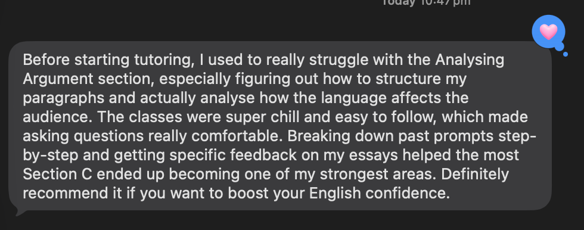
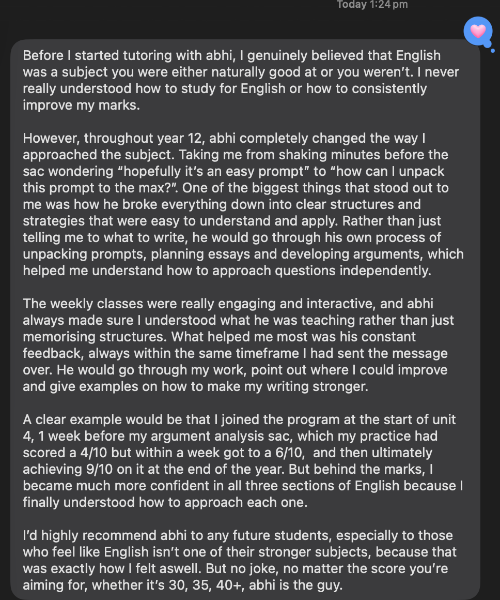

Notes from the summit
Every testimonial.
Videos, messages and screenshots from Sherpa students in VCE English and VCE General Maths.
VCE English
"Before I started tutoring, I was finding General Maths manageable but I struggled to maximise my scores, particularly because a lot of the content was new to me. I wasn't always confident in my ability to approach different questions, and I struggled with knowing how to apply the concepts in SACs and exams.
I think what helped me most was working through exam-style questions and learning how to approach questions step by step. Meet really helped with giving me study plans, answering any questions I had well and was always eager to help. With Meet's help I definitely noticed huge improvements with my scores and I'm so glad I had his help.
I would definitely recommend Meet to anyone who is looking to improve their understanding of General Maths, regardless of their starting point. Whether you're struggling with the content or aiming for a higher study score, the sessions are really helpful and provide you with the confidence and skills to improve and I will definitely share his contact to any of my friends doing General Maths too."
VCE General Maths
VCE English
"Hi Meet, this is Hayden just wanted to say thank you so much for tutoring this year, you've motivated me to study and really put effort into General Maths which I struggled with knowing where to start. Your tutoring is very structured and organised and it helped me to know exactly what I need to do to get where I wanna be. Even though I've only had you during the exam period I've learnt so much through my mistakes and you making it clear to understand.
I highly recommend any students who want to achieve their highest score possible for General Maths. Before Meet's lessons I was really lost on knowing what to do and how to go about doing my exam revision, he put me on track the first lesson building me a schedule and a plan. As well as always responding to any questions I had in quick time. He truly helped me feel prepared for my exam knowing I can do this!"
VCE General Maths
"Abhi's VCE English classes were great. I went from averaging 70% and feeling unconfident in English to an A (80%) and feeling less nervous before SACs. I felt after the class I made less mistakes when writing as we would thoroughly correct these in my past writing."
Yarra Valley Grammar · VCE English, 37
"Before tutoring, I wasn't very confident in General Maths and struggled with certain topics. Going through practice exam questions helped me the most. I've definitely become more confident and improved my understanding. I would highly recommend Meet as a tutor because he is patient and supportive to my friends in a lower year level who will also be doing General Maths next year."
VCE General Maths
"Before these English classes with Abhi, I felt quite confused and anxious about my results for VCE English. Over time, the consistent and rigorous practice really helped me feel more confident in my writing and analysis, and I became much more at ease with English overall, especially upcoming exams."
Nossal High School · VCE English, 37

Gladstone Park Secondary College · VCE English

Brentwood Secondary College · VCE English